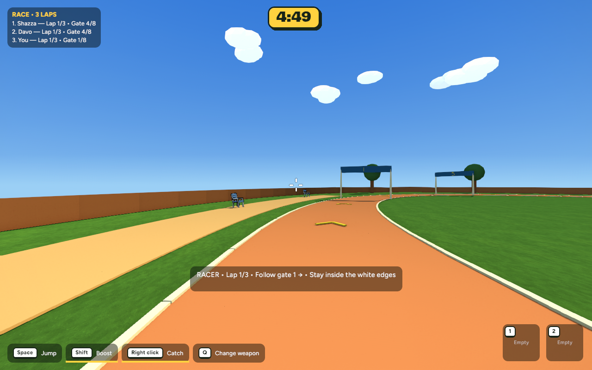
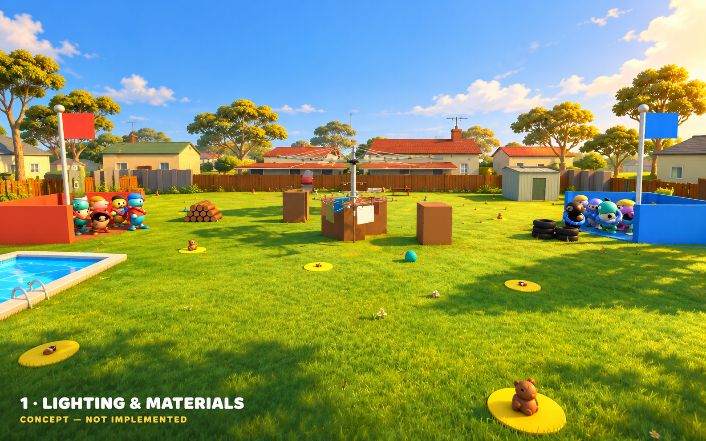
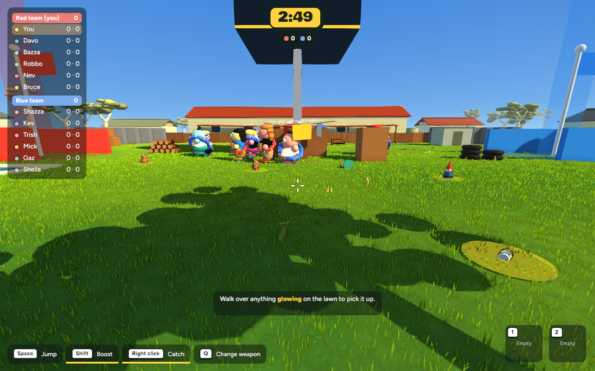
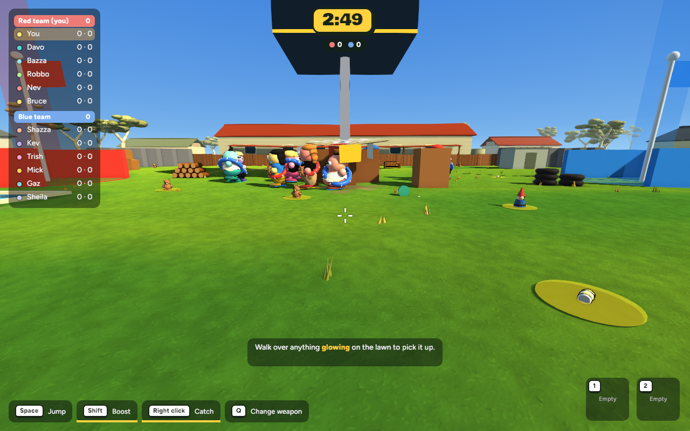
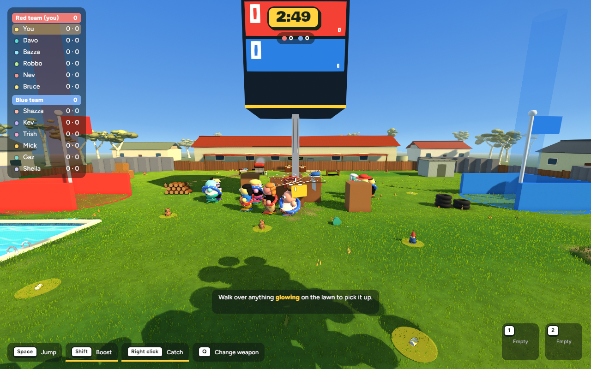
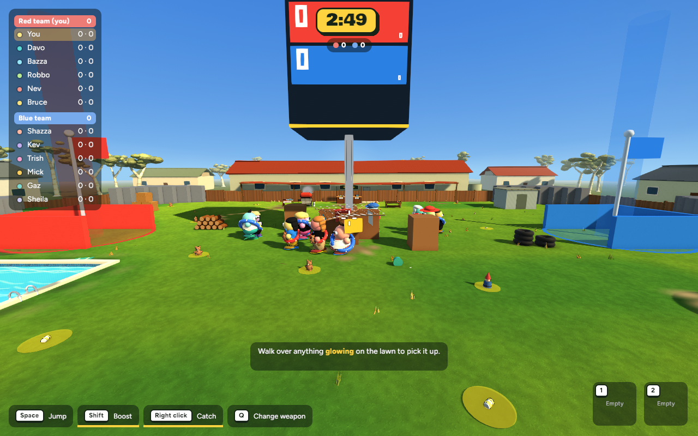
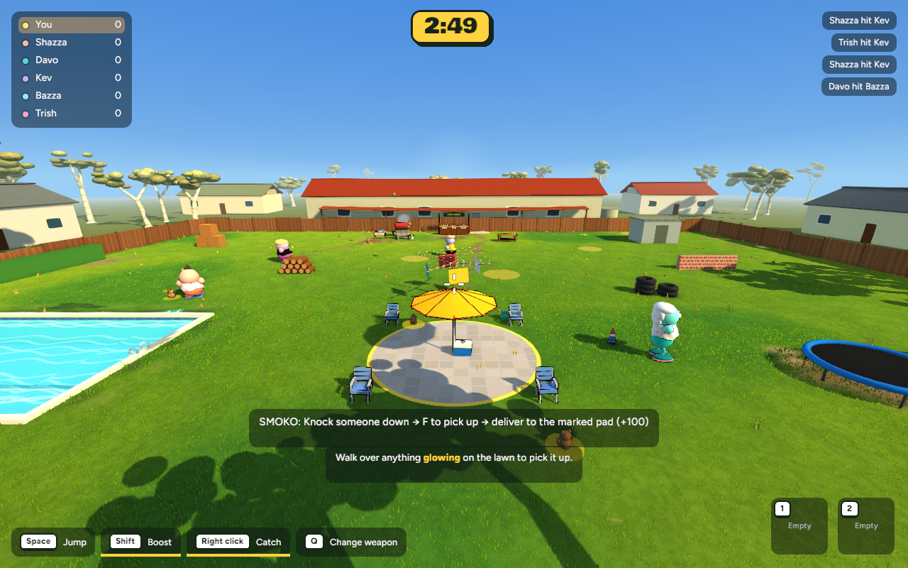
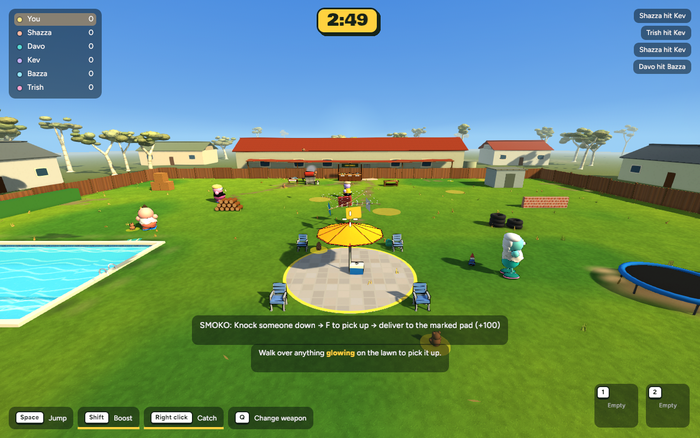
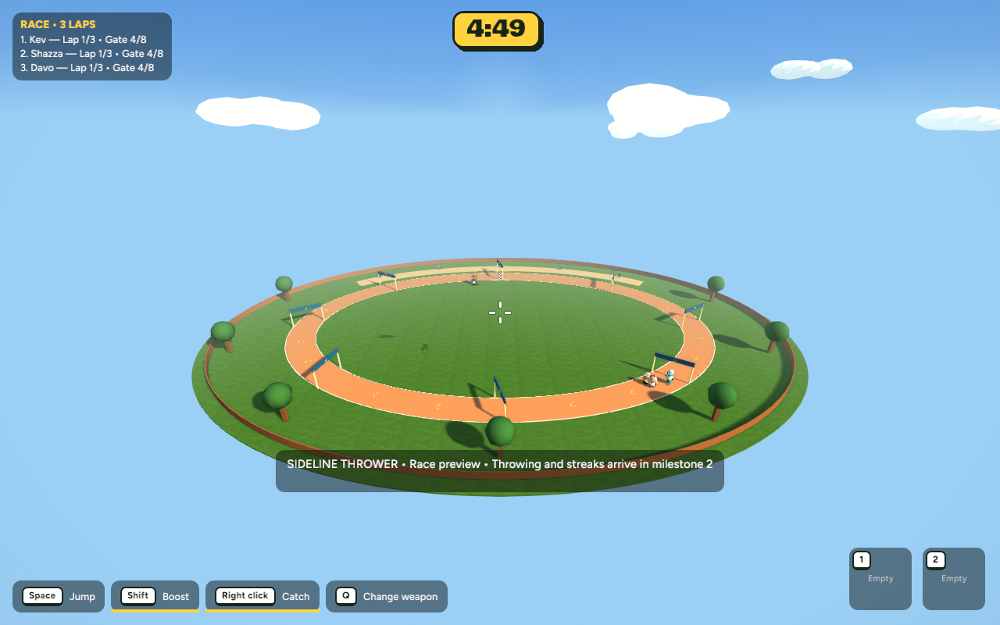

Race — player view
BeforeAfter


Implemented in the running game · 17 October 2026 · Ready to test
Short bent grass blades now catch the sunlight above the lawn texture. Nearby grass uses more detail; distant grass uses fewer blades. Three boundary gum trees cast broken canopy shade, with brighter fill light to keep shaded areas readable.
These are actual game captures, not generated concepts. Same camera, scene settings, resolution and capture frame; live bots/effects can vary. The saved “before” is the first lighting/material pass.
This is a concept, not an implemented screenshot. The game still uses simpler foliage and sharper shadow edges.









615 tests passed, one existing test ignored. Release build passed. Five before/after scene captures completed without logged errors. The selective revert was verified against the original source files.
| View | Before | After | Frame-time change |
|---|---|---|---|
| Grass at player height | 8.20 ms | 8.45 ms | +3.2% |
| Backyard / Heist | 8.20 ms | 8.21 ms | +0.1% |
| Smoko | 8.12 ms | 8.09 ms | -0.5% |
| Race — player view | 5.42 ms | 5.49 ms | +1.4% |
| Race — overview | 6.24 ms | 6.23 ms | -0.2% |
600 wall-clock frame intervals per sample at 1280×800, uncapped presentation and fixed 60 Hz simulation. The close grass view added about 3% mean frame time; the other samples stayed within about 1.5%. Small differences include run-to-run variation. These are not GPU timestamps or broad hardware benchmarks.
The blade layer adds geometry and mesh memory, plus one shared material; texture memory is unchanged. Blades do not cast shadows or have collision/physics. --grass-off is available for a lighter comparison. Distant detail changes may be noticeable during movement.
Checkpoint and restore instructions · Previous lighting pass
This update can be reverted without removing the race or Smoko changes. The original pre-graphics save point also remains available. Nothing committed or pushed.